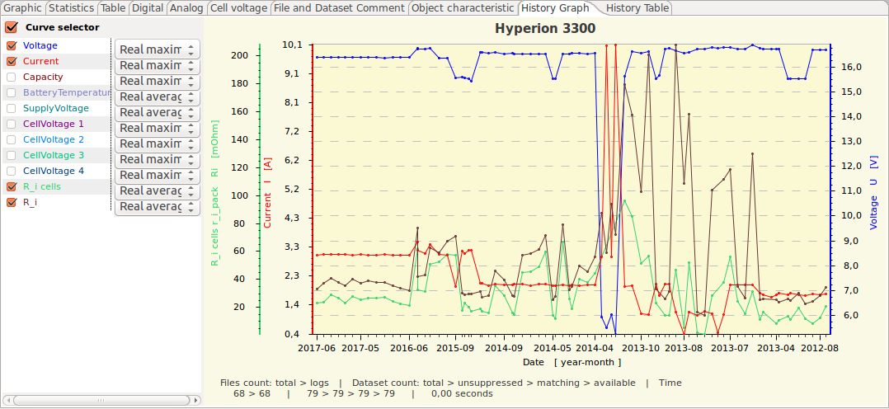

This display tab window presents the log files on a time line – starting with the most recent log file for the selected device and object. This view was designed for a convenient analysis of new log files. Whenever your devices created a new log file, you only have to make sure that it is placed in a directory in the standard data path. The analysis will mainly use saved OSD-files of your device and selected object. Depending on the device implementation raw log data might also used through the given import path. If you activate the history graphics view it will show you the new log data in a quite transparent manner on a time line with the preceding log files. As the view will come up with the same settings as the last time you used it, you will be able to focus on the most essential measurements and curve types in a quick and easy manner. In case of any inconsistencies or potential issues you might open the log files in the standard graphics window for a detailed analysis. Hint: Make this tab visible by activating the history in the settings. The settings table on the left allows you to focus on the most relevant measurements. Please note that you may select various specific curve types and curve bundles in the selection boxes. In general, the graphics configuration of the history graphics view is organized in a very similar manner to the graphics view which is the leftmost tab in the main window. The history graphics view fetches its data whenever you click on the tab. This ensures that the graphics is refreshed whenever you add new log files to the directories. Some basic history graphics settings are available in 'Preferences' > 'History'. You might also use the object selection in the device tool bar if you want to focus on a specific object. The prerequisite is object key names which correspond to object directory names. This is the reason why it is recommend arranging the log files in object directories which are sub-directories in the standard data path (refer to Preferences dialog 'Maintenance'). Hint: Make this tab visible by activating the history in the settings.

Depending on the selected device and configured history analysis deviations from the shown picture might be possible. The device configuration XML and the actual implementation state will have its influence as well. The enhanced curves selector enable more statistical values in dependency of the history configuration. It make sense to store graphics templates for the history analysis view as well, since it holds different values compared to the standard graphics templates. The context menu of the graphics area contains additional capabilities related to the analysis. It is possible to load a specific data set directly into the graphics view while some data seams debatable. A file or data set showing extreme values might be set to hidden.
Hint: If a device support raw file import it might be possible to include this files into analysis if the device implementation support this.